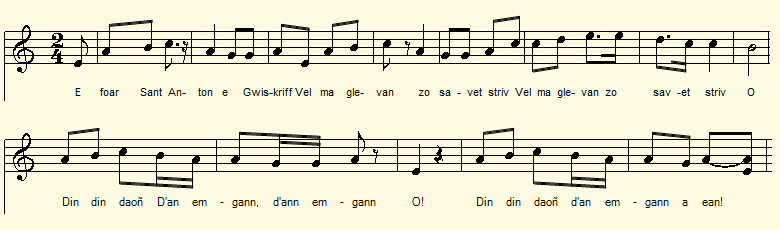
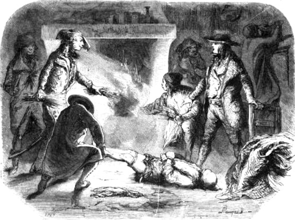

An Dommerien
Les Chauffeurs [1]
The Stokers [1]
Chant tiré du 2ème Carnet de collecte de La Villemarqué (pp. 72 - 74).
Mélodie
"An Alarc'h"
Arrangement Christian Souchon (c) 2017
|
A propos de la mélodie Des informations concernant cette mélodie sont données à la page Le Cygne. A propos du texte Noté uniquement par La Villemarqué, dans le carnet N°2, pp. 72-74. Le manuscrit n'indique pas le nom du chanteur. Ses commentaires en français montrent qu'il était bilingue. On ne donne pas, non plus, le nom de l'auteur . Tout au plus peut-on supposer qu'il s'agit du barde-chouan Guillaume Le Guern (Gwilhou Ar Vern) de Kerbléizec, du fait que celui-ci est cité, sous son surnom de "Disoursi" (Sans-souci), comme informateur de Bonaventure aux strophes 4 et 5 |
About the tune Information about this melody is given on the Swan page. About the lyrics Noted only by La Villemarqué, in notebook N ° 2, pp. 72-74. The manuscript does not indicate the name of the singer. Judging from his comments in French he was bilingual. The author's name is not known. But we may assume him to be the bard-Chouan Guillaume Guern (Gwilhou Ar Vern) of Kerbléizec, because the latter is quoted, under his nickname "Disoursi" (Worryless), as informant of Bonaventure in stanzas 4 and 5. |
|
BREZHONEG (Stumm KLT) P. 72 1. E foar St Anton e Gwiskri, Vel ma glevan, so savet striv. Din-din-daon. d'an emgan-d'an-emgan.... 2. Zo savet striv, am-eus klevet: An Dommerien a zo tizhet. 3. Mar fell deoc’h gout piv en- deus graet, Bonavantur ema añvet. 4. Disoursi (Dibreder) dezhañ a lavare, E korn an dachenn ann deiz- se : 5. Disoursi dezhañ a lavare: - Ma an Dommerien en ti-se: 6. Ma an Dommerien en davarn, Gant o fenn araok (gante) „Al Louarn“. 7. Ma an Dommerien deus an Doll, Ken a gren ar peizanted holl, 8. Ken a raent nemet krenañ ‘n holl, Gand aon na reont int ur gwall taol . 9. Na reont ket o gwall-taol touchant Leun o c‘horfoù a gwin-ardant. - 10. - Gwall-taolioù awalc'h deus int graet, Mez ken ac'hann da zont na rint ket. Page 73 / 38 11. Mard’ eo gwin-ardant a evont, Evañ tan ha gwad a reont. - 12. Oa ket e c'homz peurechuet, An davarn a zo kelc'hennet; 13. Kelc'hennet gant ar Chouanted, Ha lammet tre barzh o- deus graet 14. - Yec'het mat d'eoc'h, tud an ti-mañ, Hag Al Louarn mar ma dre-mañ ? - 15. Al Louarn gozh, pa e c'hlevaz, E zabrenn noazh a zic’houinaz; 16. N’oa ket dic’houinet e zabrenn (Dao, dao, didao ! Eñ zo lazhet.) Dao, didao ! Un tenn e-deuz bet. 17. Dao, didao!: unan, daou ha tri A zo pilet war al leur-zi. 18. Strafuilh awalc'h, e-barzh an ti! Tan ha moged ha klemm en ti! 19. Ha pa glevas, re diaviz, (Ar re diaviz pa glevjont) Leizh o c'halon c'hoarziñ a rez (Awalc’h o c'halon a c'hoarjont) 20. - Maer gant an dañs e-barzh an ti! Paotret, paotret a eomp dezhi ! (Vo ket pell ez aimp dezhi!) 21. - Me zesko deoch gwall, va faotred, Da lavar emaoc'h Chouaned! - (En marge à droite, verticalement) 22. Ha Bonavantur a lare : Gant e zabrenn pa o drailhe : 23. - Me zesko deoc'h, tud dizaour, Da gareziñ an dudigoù paour (En marge à gauche, verticalement) 24. - Me ho tisko na va faotred, Da laer añv ar Chouaned. 25. Da laer añv tud a feson Pa n’emaoc'h nemet laeron! - Page 74 26. Neb a wele an Dommerien Lammañ evel dud araok o fenn, 27. Darn gant al laez, darn gant an nor, Darn gand ar prenestoù digor. 28. Bonavantur war o lerc’h timat (tizh-vat) E zabrenn noazh, ru gant ar gwad 29. Bonavantur o boutas maez : - Dao, warne, paotred, diarez! 30. Tommet mat oc’h bet Tommerien, Na dommfec'h mui den ebet ken! - *** NOTENN: M. De Bar fit tuer les autres – Content [?] M. Prairéal, surnommé Dudon, de Gourin KLT gant Christian Souchon |
FRANCAIS P. 72 1. La foire de la Saint-Antoine A Guiscriff fut celle d’empoigne. [2] Din-ding-don. Au combat, au combat... 2. On s’est bien battu, m’a-t-on dit. Des « Chauffeurs » en payent le prix. 3. Quel est l’auteur de ce haut-fait? C'est Bonaventure, on le sait. 4. "Sanssouci" un jour lui disait, Quand sur la place ils débouchaient: 5. - Les chauffeurs que nous recherchions, Ils sont là, dans cette maison, 6. Les chauffeurs, dans cette taverne, Ainsi que leur chef Le Louarn. 7. Ils viennent de Dol, ces chauffeurs. Tous les paysans en ont peur. 8. Oui, tous ils ne font que trembler, Redoutant de nouveaux méfaits. 9. Rien à craindre pour le moment: Ils cuvent leur vin gentiment. 10. - Des méfaits s’ils en ont commis, Leur carrière prend fin ici: Page 73 / 38 11. Après l’eau-de-vie, qu'à présent, Ils boivent du feu et du sang! – 12. Aussitôt dit, aussitôt fait, L'estaminet est encerclé. 13. Les Chouans encerclent la maison Puis ils y pénètrent d’un bond. 14. - Salut, toute la compagnie ! Le Louarn est-il là, je vous prie ? – 15. L’infâme Louarn écoute à peine : Son sabre aussitôt il dégaine. 16. Pour dégainer il est bien tard (Pan! Pan! Et pan! Le voilà mort!) Pan! Voilà qu’un coup de feu part! 17. Pan! Pan! et de deux et de trois Chauffeurs raides-morts que voilà! 18. Quel remue-ménage, vraiment! Feu, fumée, cris assourdissants! 19. L’imprudent qui tendait l’oreille (Les imprudents qui entendirent) Sa joie éclatait, sans pareille : (Ah que c'est de bon cœur qu'ils rirent!) 20. - Mais on dirait qu’on danse ici! Les gars, on y va, nous aussi! (Pas de temps à perdre, allons-y!) [3] 21. - Je vous apprendrai pour longtemps A vous faire passer pour Chouans! (En marge à droite, verticalement) 22. De plus, Bonaventure a dit Tout en ferraillant ce qui suit: 23. - Je vous apprendrai, sacripants A porter tort aux pauvres gens! - (En marge à gauche, verticalement) 24. - Je vous apprendrai, mécréants A détourner le nom de «Chouans». 25. Le nom d’hommes fort estimables Usurpé par des misérables! - Page 74 26. Voir ces Chauffeurs - ah quelle fête! - Bondissant cul par-dessus tête, 27. Par l’escalier, ou par la porte, Par la fenêtre ouverte un autre, 28. Et Bonaventure à leurs trousses, Son sabre plein de taches rousses! 29. Il les a tous boutés dehors : - Allons-y! Encore un effort! 30. Chauffeurs, cette chauffe était bonne? Vous ne chaufferez plus personne! – [3] *** NOTE: M. De Bar fit tuer les autres – Content [?] M. Périal, surnommé Dudon, de Gourin. [4] Traduction Christian Souchon (c) 2019 |
ENGLISH Page 72 1. In Guiscriff Saint-Antony's fair Ended in brutal brawl and scare. [2] Din-din-dong. To the fight, to the fight... 2. Chouans fought well, so I was told. The heating "Stokers" now are cold. 3. Who did achieve this feat of fame? Bonaventure is his nickname. 4. Sanssouci said to him one day, Round the corner on their way: 5. Sanssouci that day said to him: - The house here is full to the brim 6. With Stokers. Full is the tavern. They are with their leader Le Louarn. 7. This Stoker gang comes from Dol town. All peasants are afraid of them. 8. Everybody quivers and quakes, Fearing new violent outbreaks. 9. Nothing to fear: they drank their fill, Now they sleep it off! All is still. 10. - Lots of misdeeds they committed: T'leave unscathed they're not permitted! Page 73/38 11. Since brandy does their eyes becloud, We will make them drink fire and blood! - 12. His speech hardly came to a close When the Chouans encircled the house, 13. The Chouans were standing all around And they entered it with a bound! 14. - Good afternoon, the lot of you! Where is Louarn, the chief of the crew! - 15. The infamous Louarn, hearing it: Had drawn his saber with quick wit. 16. But to draw sword it was too late: (This one for once has met his fate!) A shot! Another shot away! 17. Pan! Pan! And one and two and three! Down they fell! And stiff-dead were they! 18. What hustle and bustle, really! Fire and smoke and cries and folly! 19. The imprudent who had listened (Or to do so was commissioned) His joy had broken out, freely: (And he would have laughed heartily) 20. - But it looks like they're dancing here! Lads, let us dance, let us draw near! (No time to waste! Nothing to fear!) [3] 21. - You thought you would eternally Go on pretending Chouans to be? - (In the right margin, vertically) 22. So Chieftain Bonaventure said Brandishing his saber ahead: 23. - I will teach you, rotten scoundrels, To torture innocent people! (In the left margin, vertically) 24. - I'll teach you, unbelievers, to Divert the name "Chouans", as you do... 25. The name of estimable men Shall not be usurped again! - Page 74 26. Imagine how everyone feels: Stokers falling head over heels, 27. One up the stairs, one through the door, Through the open window, one more, 28. And Bonaventure on their tail With his sword like a bloody flail! 29. He kicked them all out of the place: - At them! He cried, red in his face. 30. After this stoking are you sore? You will not stoke fire anymore! - [3] *** NOTE: M. De Bar had the others killed by his men - Content [?] M. Périal, alias Dudon, of Gourin. [4] Translation Christian Souchon (c) 2019 |
NOTES
|
[1] Tommerien: Ce mot est, à l'évidence, l'équivalent de "Chauffeurs". Ce chant nous apprend qu'en Bretagne, ils se faisaient souvent passer pour des Chouans en s'habillant comme eux, détruisant ainsi leur réputation. On les appelait des "Contre-Chouans" qui agissaient parfois pour le compte des autorités républicaines. Ces "Tommerien" bretons n'étaient pas les seuls en France, comme nous l'apprend l'article Wikipédia ci-après: "Les « Chauffeurs de pâturons » (en argot, « brûleurs de pieds ») ou simplement « Chauffeurs » est un terme populaire utilisé pour désigner les bandes de criminels qui s’introduisaient la nuit chez les gens et leur brûlaient les pieds sur les braises de la cheminée pour leur faire avouer où ils cachaient leurs économies. On commence à évoquer ces criminels pendant la Révolution française, lorsque l’État est désorganisé. Les forêts couvrant une très grande proportion du territoire protégeaient alors toutes sortes d’individus. À l’époque, sévissent surtout les « Chauffeurs du Nord » dont les plus célèbres furent : François-Marie Salembier (né le 15 décembre 1764 Isbergues - guillotiné à Bruges le 6 novembre 1798), qui sévit dans les départements de la Lys, de l’Escaut et du Nord ; la bande du Capitaine Moneuse (Marly 1768 - guillotiné à Douai le 18 juin 1798) qui terrorise le Nord, le Pas-de-Calais et le Hainaut belge ; les Chauffeurs d'Orgères dont les activités s’étendent sur sept départements, particulièrement en Eure-et-Loir et dans le Loiret, etc. Ces sinistres personnages, en général de paisibles ouvriers ou commerçants le jour, se masquent ou se maquillent le visage en noir la nuit pour aller dévaliser de pauvres gens. En cas de refus, ou même parfois pour ne pas laisser de témoins de leur passage, ces bandits assassinent leurs victimes. Les Chauffeurs arrêtés finissent, en général, à la guillotine. C’est ainsi que le 3 octobre 1800, à Chartres, ils sont 23 de la bande d’Orgères à monter sur l’échafaud.." (Source : Wikipédia) [2] Les strophes 19 et 20 indiquent que la population s’est jointe aux Chouans pour massacrer les Chauffeurs. [3] Le massacre de 30 Chauffeurs faux chouans par Bonaventure et la population à la foire Saint-Antoine de Guiscriff est daté de 1795 par l’Abbé François Cadic dans son « Histoire populaire de la Chouannerie », tome II, p.92, (publiée dans "La Paroisse Bretonne de Paris",entre 1908 et 1918). Le présent chant nous donne des informations supplémentaires: - le jour exact, la Saint-Antoine, soit le 13 juin; - le nom du chef de la bande de Chauffeurs : « Le Louarn » et son origine « An Dol » (sans doute s'agit-il de Dol); - le fait que Bonaventure était assisté par son ami Guillaume Le Guern dit "Sans-souci". On peut cependant penser que l'année proposée par l'abbé Cadic doive être corrigée en 1799 (Il datait aussi de 1791 un événement de 1798, l'assassinat du "Citoyen Soufflet"). [4] La strophe 30 est suivie d'une remarque énigmatique en français qui est sans doute un commentaire fait par le chanteur. Peut-être faut-il comprendre que Edme Le Paige de Bar, chargea Périal dit Dudon de liquider le reste de la bande, aussitôt après l'exploit de Bonaventure. Cela pourrait vouloir dire que le massacre de Chauffeurs eut lieu plus tard que ne l'indique l'abbé Cadic. C'est en effet de 1799 que date l'organisation en légions de l'armée catholique et royale du Morbihan commandée par Georges Cadoudal. La 8ème légion, celle de Gourin comptait 1500 hommes et avait pour colonel de Bar, dit Le Prussien ou Monte au ciel. Elle comportait 3 bataillons dont l'un avait pour chef Périal dit Dudon. Il est vrai que ce dernier, après avoir pris part à la glorieuse campagne des Pays-Bas, avait quitté l'armée républicaine à fin 1794. Il devait suivre Cadoudal en Angleterre à fin 1801; De même l'activité subversive de l'ancien avocat Jean François Edme Le Paige de Bar (1763-1813), avait débuté dès son retour à Concarneau en 1794. |
[1] Tommerien: This word is, obviously, the equivalent of "Chauffeurs" (translated as "Stokers").
This song teaches us that in Brittany, these bandits often pretended to be Chouans by dressing like them, thus destroying their reputation. They were called "Contre-Chouans" who sometimes were in the pay of the Republican authorities. These Breton "Tommerien" were not the only "Stokers" in France, as we learn from the below Wikipedia article. "Chauffeurs de pâturons" (slang, "foot burners") or simply "Chauffeurs" was a popular term used to refer to gangs of criminals who broke into people's homes at night and burned their feet on the embers in the chimney to make them confess where they hid their savings. These criminals became the talk of the town during the French Revolution, when the state was disorganized. The woods back then covering a very large portion of the territory served as hide-out for all kinds of people. At the time, especially famous were the "Chauffeurs du Nord" (Northern Stokers) whose leaders were: François-Marie Salembier (born December 15, 1764 at Isbergues - guillotined in Bruges on November 6, 1798), who operated in the départements Lys, Scheldt and North; Captain Moneuse (Marly 1768 - guillotined in Douai on 18 June 1798) who terrorized the départements North, Pas-de-Calais and Belgian Hainaut. Another well-known gang were the "Chauffeurs of Orgères" whose activities extended over seven départements, particularly in Eure-et-Loir and Loiret, etc. These sinister characters, as a rule peaceful workmen or traders during the day, masked or smeared their faces with black ash at night to rob poor people of their money. In case of refusal, or even sometimes not to leave witnesses of their passage, these bandits assassinated their victims. When they were arrested, these murderous thieves usually ended up under the guillotine. Thus, on October 3, 1800, in Chartres, the 23 men of the Orgères gang climbed the scaffold... "(Source: Wikipedia). [2] Stanzas 19 and 20 indicate that the population joined the Chouans in massacring the Stokers. [3] The massacre of 30 false Chouans by Bonaventure and the population at the Saint-Antoine de Guiscriff fair is dated to 1795 by the Rev. François Cadic in his "Histoire populaire de la Chouannerie", Volume II, p.92, (published in "The Breton Parish of Paris", between 1908 and 1918). The present song gives us additional information: - the exact day, St. Anthony day, June 13; - the name of the leader of the Stokers group: "The Louarn" and their origin "An Dol" (undoubtedly it is the town Dol); - the fact that Bonaventure was assisted by his friend Guillaume Le Guern alias "Sans-souci". We may, however, suspect that the year proposed by Father Cadic ought to be corrected to 1799 (an event of 1798, the assassination of "Citizen Soufflet", was also dated to 1791). [4] The stanza 30 is followed by an enigmatic remark in French which is undoubtedly a comment made by the singer. Maybe we are to understand that Edme Le Paige de Bar, commissioned Peral dit Dudon to "liquidate" the rest of the gang, immediately after the Bonaventure's exploit. This could mean that the massacre of the Stokers took place later than stated by the Reverend Cadic. It was, in fact, from 1799 that the (Chouan) "Catholic and Royal Army of Morbihan" commanded by Georges Cadoudal was organized in Legions. The Eighth Legion, the Gourin Legion had 1500 men under Colonel De Bar, alias the "Prussian", alias "Monte-au-Ciel". It consisted of three battalions, one of which was commanded by Périal, alias Dudon. However the latter, after taking part in the glorious campaign of the Netherlands, had left the Republican army as early as at the end of 1794. He was to follow Cadoudal in exile to England at the end of 1801. Similarly, the subversive activity of the former lawyer Jean François Edme Bar Le Paige (1763-1813), had started on his return to Concarneau in 1794. |

Chauffeurs
"Les Chouans selon Villemarqué", un livre au format A4.  Cliquer sur le lien ou sur l'image ci-dessus |